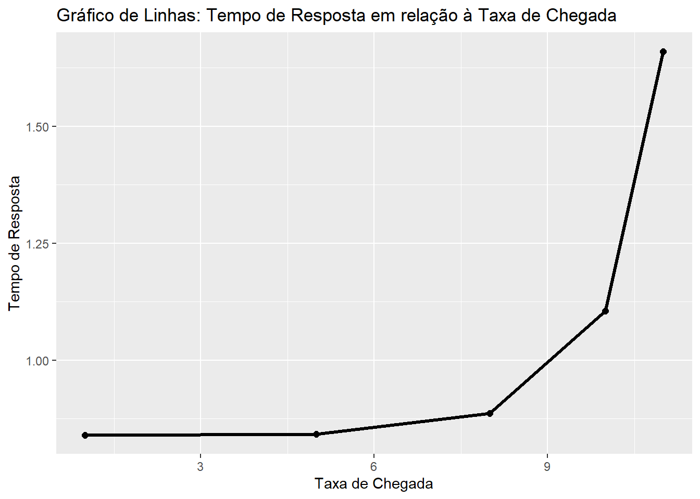
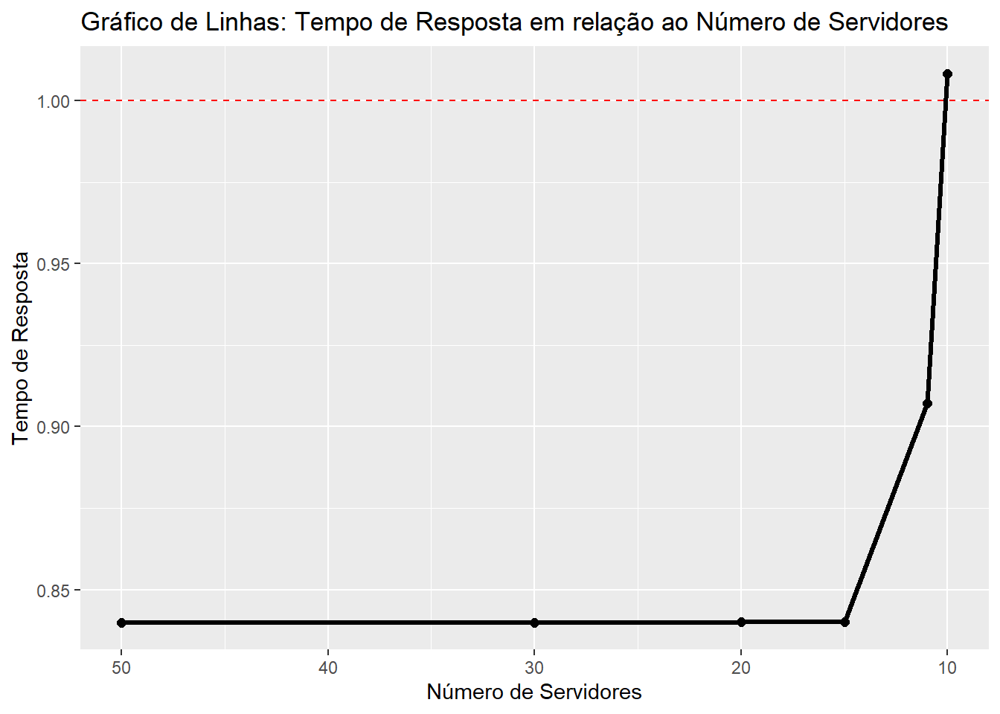

Código
library(purrr)
library(queueing)
library(ggplot2)
library(tidyr)Como o tempo de resposta das requisições varia ao aumentar a carga do sistema (ou seja, aumentar a taxa de chegada de requisições no sistema)?
· Taxa de chegada: variável
· Tempo de serviço: 0.84 segundo
· Número de servidores: 10
· Tempo de observação: 30 segundos
Teste 1
Código
taxa_de_chegada_1 <- 1 # Taxa de chegada média (requisições por segundo)
taxa_de_servico <- 1/0.84 # Taxa de serviço média por servidor (segundos por requisição)
n_servidores <- 10 # Número de servidores
# Objeto de entrada para o modelo M/M/c
mmc_input_1 <- NewInput.MMC(taxa_de_chegada_1, taxa_de_servico, n_servidores)
# Modelo M/M/c
mmc_model_1 <- QueueingModel(mmc_input_1)
# Relatório do modelo
Report(mmc_model_1)The inputs of the model M/M/c are:
lambda: 1, mu: 1.19047619047619, c: 10, n: 0, method: Exact
The outputs of the model M/M/c are:
The probability (p0, p1, ..., pn) of the n = 0 clients in the system are:
0.4317105
The traffic intensity is: 0.84
The server use is: 0.084
The mean number of clients in the system is: 0.840000002083103
The mean number of clients in the queue is: 2.08310327441136e-09
The mean number of clients in the server is: 0.84
The mean time spend in the system is: 0.840000002083103
The mean time spend in the queue is: 2.08310327441136e-09
The mean time spend in the server is: 0.84
The mean time spend in the queue when there is queue is: 0.0917030567685589
The throughput is: 1Teste 2
Código
taxa_de_chegada_5 <- 5
taxa_de_servico <- 1/0.84
n_servidores <- 10
mmc_input_2 <- NewInput.MMC(taxa_de_chegada_5, taxa_de_servico, n_servidores)
mmc_model_2 <- QueueingModel(mmc_input_2)
Report(mmc_model_2)The inputs of the model M/M/c are:
lambda: 5, mu: 1.19047619047619, c: 10, n: 0, method: Exact
The outputs of the model M/M/c are:
The probability (p0, p1, ..., pn) of the n = 0 clients in the system are:
0.01497996
The traffic intensity is: 4.2
The server use is: 0.42
The mean number of clients in the system is: 4.20880306528114
The mean number of clients in the queue is: 0.00880306528114235
The mean number of clients in the server is: 4.2
The mean time spend in the system is: 0.841760613056229
The mean time spend in the queue is: 0.00176061305622847
The mean time spend in the server is: 0.84
The mean time spend in the queue when there is queue is: 0.144827586206897
The throughput is: 5Teste 3
Código
taxa_de_chegada_8 <- 8
taxa_de_servico <- 1/0.84
n_servidores <- 10
mmc_input_3 <- NewInput.MMC(taxa_de_chegada_8, taxa_de_servico, n_servidores)
mmc_model_3 <- QueueingModel(mmc_input_3)
Report(mmc_model_3)The inputs of the model M/M/c are:
lambda: 8, mu: 1.19047619047619, c: 10, n: 0, method: Exact
The outputs of the model M/M/c are:
The probability (p0, p1, ..., pn) of the n = 0 clients in the system are:
0.001151181
The traffic intensity is: 6.72
The server use is: 0.672
The mean number of clients in the system is: 7.09213024011418
The mean number of clients in the queue is: 0.372130240114177
The mean number of clients in the server is: 6.72
The mean time spend in the system is: 0.886516280014272
The mean time spend in the queue is: 0.0465162800142721
The mean time spend in the server is: 0.84
The mean time spend in the queue when there is queue is: 0.25609756097561
The throughput is: 8Teste 4
Código
taxa_de_chegada_10 <- 10
taxa_de_servico <- 1/0.84
n_servidores <- 10
mmc_input_4 <- NewInput.MMC(taxa_de_chegada_10, taxa_de_servico, n_servidores)
mmc_model_4 <- QueueingModel(mmc_input_4)
Report(mmc_model_4)The inputs of the model M/M/c are:
lambda: 10, mu: 1.19047619047619, c: 10, n: 0, method: Exact
The outputs of the model M/M/c are:
The probability (p0, p1, ..., pn) of the n = 0 clients in the system are:
0.0001673985
The traffic intensity is: 8.4
The server use is: 0.84
The mean number of clients in the system is: 11.0474066380139
The mean number of clients in the queue is: 2.64740663801391
The mean number of clients in the server is: 8.4
The mean time spend in the system is: 1.10474066380139
The mean time spend in the queue is: 0.264740663801391
The mean time spend in the server is: 0.84
The mean time spend in the queue when there is queue is: 0.525
The throughput is: 10Teste 5
Código
taxa_de_chegada_11 <- 11
taxa_de_servico <- 1/0.84
n_servidores <- 10
mmc_input_5 <- NewInput.MMC(taxa_de_chegada_11, taxa_de_servico, n_servidores)
mmc_model_5 <- QueueingModel(mmc_input_5)
Report(mmc_model_5)The inputs of the model M/M/c are:
lambda: 11, mu: 1.19047619047619, c: 10, n: 0, method: Exact
The outputs of the model M/M/c are:
The probability (p0, p1, ..., pn) of the n = 0 clients in the system are:
4.509652e-05
The traffic intensity is: 9.24
The server use is: 0.924
The mean number of clients in the system is: 18.2587112979737
The mean number of clients in the queue is: 9.01871129797365
The mean number of clients in the server is: 9.24
The mean time spend in the system is: 1.65988284527033
The mean time spend in the queue is: 0.819882845270332
The mean time spend in the server is: 0.84
The mean time spend in the queue when there is queue is: 1.10526315789474
The throughput is: 11Variação do tempo de resposta de acordo com da taxa de chegada
Código
codigo1 <- data.frame(
taxa = c(taxa_de_chegada_1, taxa_de_chegada_5, taxa_de_chegada_8, taxa_de_chegada_10, taxa_de_chegada_11),
tempo_resposta = c(mmc_model_1$W, mmc_model_2$W, mmc_model_3$W, mmc_model_4$W, mmc_model_5$W)
)
# write.csv(codigo1, file = "codigo1.csv", row.names = FALSE)
codigo1 taxa tempo_resposta
1 1 0.8400000
2 5 0.8417606
3 8 0.8865163
4 10 1.1047407
5 11 1.6598828Código
ggplot(codigo1, aes(x = taxa, y = tempo_resposta)) +
geom_line(linewidth=1.1) +
geom_point(shape = 16, size =2 , color = "black") +
labs(x = "Taxa de Chegada", y = "Tempo de Resposta") +
ggtitle("Gráfico de Linhas: Tempo de Resposta em relação à Taxa de Chegada")
Qual a quantidade mínima de servidores necessários para obter um tempo de resposta médio menor que 1 segundo? Neste caso foi analisado diferentes cenários de simulação.
· Taxa de chegada: 9,5 requisições por segundo
· Tempo de serviço: 0.84 segundo
· Número de servidores: variável
· Tempo de observação: 30 segundos
Teste 1
Código
taxa_de_chegada_T1 <- 9.5
taxa_de_servico <- 1/0.84
n_servidores_1 <- 50
mmc_input_6 <- NewInput.MMC(taxa_de_chegada_T1, taxa_de_servico, n_servidores_1)
mmc_model_6 <- QueueingModel(mmc_input_6)
Report(mmc_model_6)The inputs of the model M/M/c are:
lambda: 9.5, mu: 1.19047619047619, c: 50, n: 0, method: Exact
The outputs of the model M/M/c are:
The probability (p0, p1, ..., pn) of the n = 0 clients in the system are:
0.0003422394
The traffic intensity is: 7.98
The server use is: 0.1596
The mean number of clients in the system is: 7.98
The mean number of clients in the queue is: 3.20228904045918e-24
The mean number of clients in the server is: 7.98
The mean time spend in the system is: 0.84
The mean time spend in the queue is: 3.3708305689044e-25
The mean time spend in the server is: 0.84
The mean time spend in the queue when there is queue is: 0.019990480723465
The throughput is: 9.5Teste 2
Código
taxa_de_chegada_T2 <- 9.5
taxa_de_servico <- 1/0.84
n_servidores_2 <- 30
mmc_input_7 <- NewInput.MMC(taxa_de_chegada_T2, taxa_de_servico, n_servidores_2)
mmc_model_7 <- QueueingModel(mmc_input_7)
Report(mmc_model_7)The inputs of the model M/M/c are:
lambda: 9.5, mu: 1.19047619047619, c: 30, n: 0, method: Exact
The outputs of the model M/M/c are:
The probability (p0, p1, ..., pn) of the n = 0 clients in the system are:
0.0003422394
The traffic intensity is: 7.98
The server use is: 0.266
The mean number of clients in the system is: 7.98000000073155
The mean number of clients in the queue is: 7.31553709428844e-10
The mean number of clients in the server is: 7.98
The mean time spend in the system is: 0.840000000077006
The mean time spend in the queue is: 7.70056536240888e-11
The mean time spend in the server is: 0.84
The mean time spend in the queue when there is queue is: 0.0381471389645777
The throughput is: 9.5Teste 3
Código
taxa_de_chegada_T3 <- 9.5
taxa_de_servico <- 1/0.84
n_servidores_3 <- 20
mmc_input_8 <- NewInput.MMC(taxa_de_chegada_T3, taxa_de_servico, n_servidores_3)
mmc_model_8 <- QueueingModel(mmc_input_8)
Report(mmc_model_8)The inputs of the model M/M/c are:
lambda: 9.5, mu: 1.19047619047619, c: 20, n: 0, method: Exact
The outputs of the model M/M/c are:
The probability (p0, p1, ..., pn) of the n = 0 clients in the system are:
0.0003422355
The traffic intensity is: 7.98
The server use is: 0.399
The mean number of clients in the system is: 7.98017040493488
The mean number of clients in the queue is: 0.000170404934876504
The mean number of clients in the server is: 7.98
The mean time spend in the system is: 0.840017937361566
The mean time spend in the queue is: 1.79373615659478e-05
The mean time spend in the server is: 0.84
The mean time spend in the queue when there is queue is: 0.0698835274542429
The throughput is: 9.5Teste 4
Código
taxa_de_chegada_T4 <- 9.5
taxa_de_servico <- 1/0.84
n_servidores_4 <- 15
mmc_input_9 <- NewInput.MMC(taxa_de_chegada_T4, taxa_de_servico, n_servidores_4)
mmc_model_9 <- QueueingModel(mmc_input_9)
Report(mmc_model_9)The inputs of the model M/M/c are:
lambda: 9.5, mu: 1.19047619047619, c: 15, n: 0, method: Exact
The outputs of the model M/M/c are:
The probability (p0, p1, ..., pn) of the n = 0 clients in the system are:
0.0003415462
The traffic intensity is: 7.98
The server use is: 0.532
The mean number of clients in the system is: 8.00149874433939
The mean number of clients in the queue is: 0.0214987443393857
The mean number of clients in the server is: 7.98
The mean time spend in the system is: 0.842263025719935
The mean time spend in the queue is: 0.00226302571993534
The mean time spend in the server is: 0.84
The mean time spend in the queue when there is queue is: 0.11965811965812
The throughput is: 9.5Teste 5
Código
taxa_de_chegada_T5 <- 9.5
taxa_de_servico <- 1/0.84
n_servidores_5 <- 11
mmc_input_10 <- NewInput.MMC(taxa_de_chegada_T5, taxa_de_servico, n_servidores_5)
mmc_model_10 <- QueueingModel(mmc_input_10)
Report(mmc_model_10)The inputs of the model M/M/c are:
lambda: 9.5, mu: 1.19047619047619, c: 11, n: 0, method: Exact
The outputs of the model M/M/c are:
The probability (p0, p1, ..., pn) of the n = 0 clients in the system are:
0.00031723
The traffic intensity is: 7.98
The server use is: 0.725454545454545
The mean number of clients in the system is: 8.61919306344862
The mean number of clients in the queue is: 0.639193063448623
The mean number of clients in the server is: 7.98
The mean time spend in the system is: 0.907283480363013
The mean time spend in the queue is: 0.067283480363013
The mean time spend in the server is: 0.84
The mean time spend in the queue when there is queue is: 0.278145695364238
The throughput is: 9.5Teste 6
Código
taxa_de_chegada_T6 <- 9.5
taxa_de_servico <- 1/0.84
n_servidores_6 <- 10
mmc_input_11 <- NewInput.MMC(taxa_de_chegada_T6, taxa_de_servico, n_servidores_6)
mmc_model_11 <- QueueingModel(mmc_input_11)
Report(mmc_model_11)The inputs of the model M/M/c are:
lambda: 9.5, mu: 1.19047619047619, c: 10, n: 0, method: Exact
The outputs of the model M/M/c are:
The probability (p0, p1, ..., pn) of the n = 0 clients in the system are:
0.0002833037
The traffic intensity is: 7.98
The server use is: 0.798
The mean number of clients in the system is: 9.57888877137247
The mean number of clients in the queue is: 1.59888877137247
The mean number of clients in the server is: 7.98
The mean time spend in the system is: 1.0083040811971
The mean time spend in the queue is: 0.168304081197102
The mean time spend in the server is: 0.84
The mean time spend in the queue when there is queue is: 0.415841584158416
The throughput is: 9.5Código
codigo2 <- data.frame(
numero_servidores = c(n_servidores_1, n_servidores_2, n_servidores_3, n_servidores_4, n_servidores_5, n_servidores_6),
tempo_resposta = c(mmc_model_6$W, mmc_model_7$W, mmc_model_8$W, mmc_model_8$W, mmc_model_10$W, mmc_model_11$W)
)
# write.csv(codigo2, file = "codigo2.csv", row.names = FALSE)
codigo2 numero_servidores tempo_resposta
1 50 0.8400000
2 30 0.8400000
3 20 0.8400179
4 15 0.8400179
5 11 0.9072835
6 10 1.0083041Código
ggplot(codigo2, aes(x = numero_servidores, y = tempo_resposta)) +
geom_line(linewidth=1.1) +
geom_hline(yintercept = 1, linetype = "dashed", color = "red") +
geom_point(shape = 16, size = 2, color = "black") +
labs(x = "Número de Servidores", y = "Tempo de Resposta") +
ggtitle("Gráfico de Linhas: Tempo de Resposta em relação ao Número de Servidores") +
scale_x_reverse()